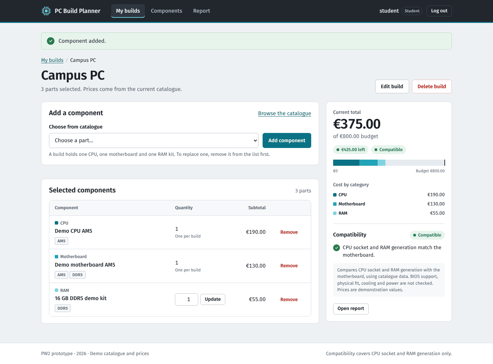
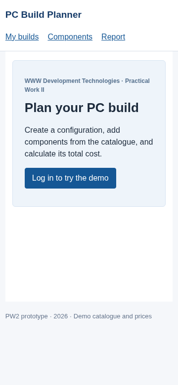
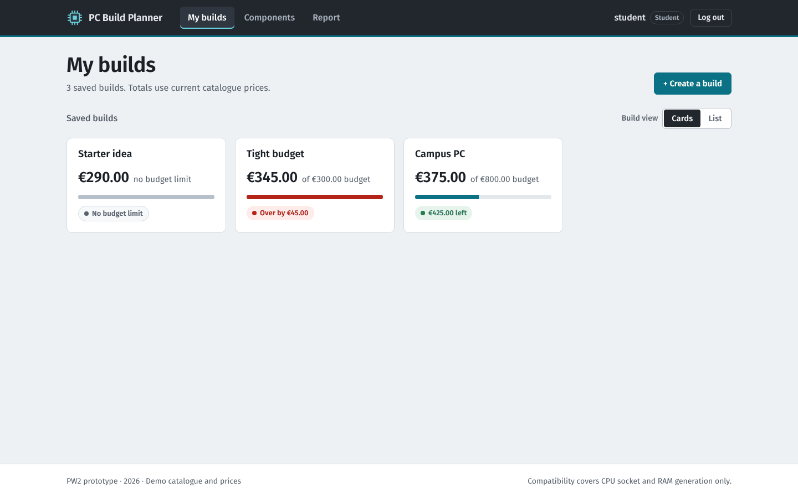
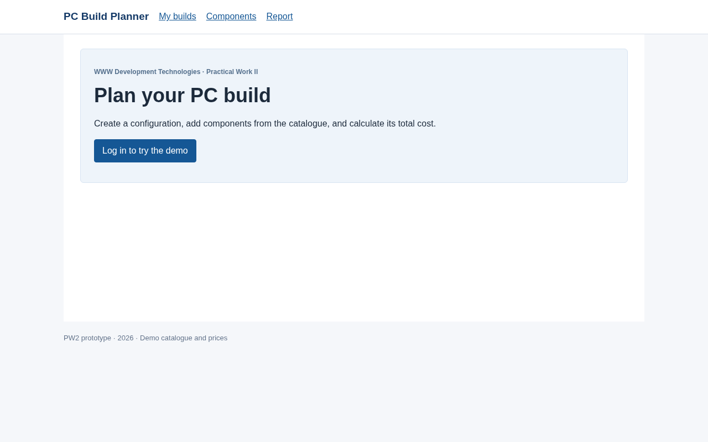

Offline screenshot fallback
These screenshots show the local Claude redesign attached to the review branch. Use the live verification notes for the separate PythonAnywhere baseline.
Public baseline checks · Public baseline link
Saved build, desktop

Saved build, mobile

Dashboard and overview

